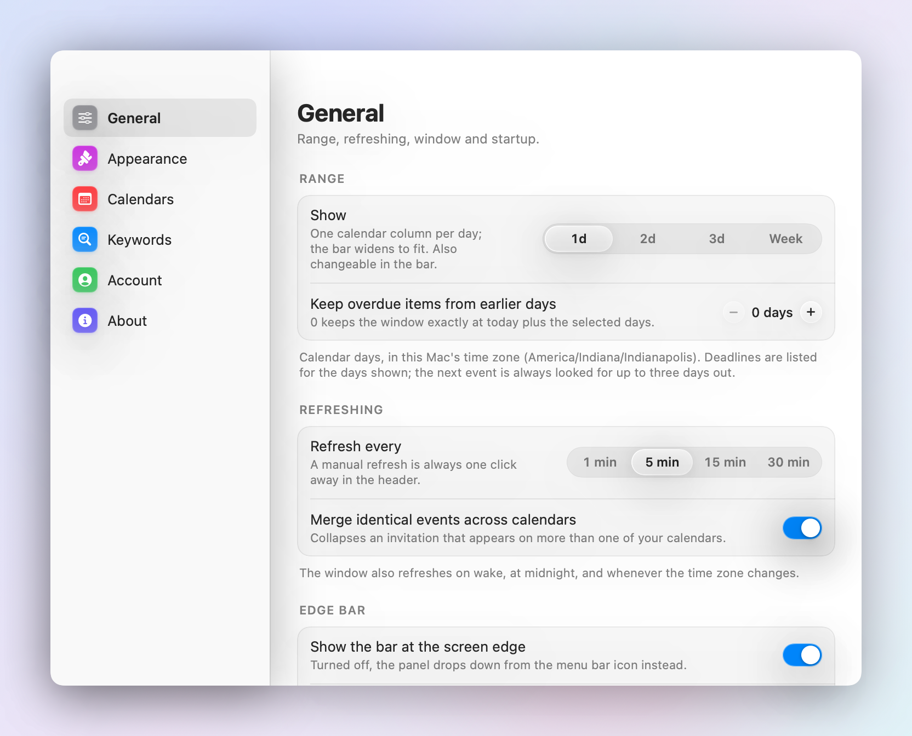
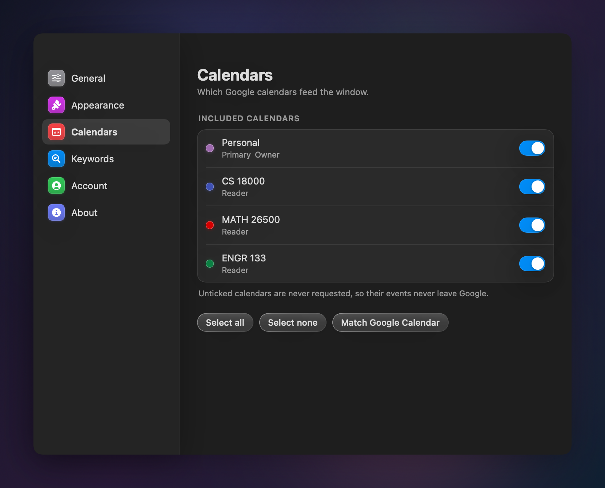

Your deadlines,
always in view
A twelve-point sliver down the edge of your Mac. Rest the pointer on it and your Google Calendar opens out — what is due, when, and what the day holds.
Verify the download
shasum -a 256 DeadlineFloat-1.0.dmg 088c5f2502d9ebe80c2a71b3fef7f7f7281e71c3a6d0e57870672ff8e636c0c6 DeadlineFloat-1.0.dmg 15adbb11498df1d0b05f6bb15853c8eb0ea997ae3919046e91562508c70a8b08 DeadlineFloat-1.0.zip
That bar on the right edge of this page is the app. Rest your pointer on it.

Live demo
Not a video. The panel itself.
Rebuilt in the browser from the app's own demo calendar — the same Google colours, the same midnight-to-midnight ruler, the same countdowns, ticking while you read. Scroll to watch the sliver open. Then play with it.
Twelve points wide
Down the edge of every display: the whole day as a ruler, every event drawn as long as it actually lasts, and a needle for now. Beside it, a pill saying what is on and how long it has left.
It stretches, it doesn't fade
Rest the pointer on the sliver and it widens sideways — the very same blocks growing into today's column while the task list arrives beside them. Deadlines on the left, the schedule on the right.
A day, or the whole week
1d, 2d, 3d, Week. The bar widens one step each time and the calendar adds a column; the list grows a section for every day it can now see.
Swipe it done
Two fingers across a row, with a tap from the trackpad, and it is gone. Click any row here to try it. Finished items wait in a drawer above the list, and swipe back whenever you like.
The interactive demo needs a wider screen. This is the real panel, rendered by the app itself.
Click a deadline to swipe it done · click the hourglass in the menu bar to open and close the bar
What is on now, or what is next — never a guess
“HAPPENING NOW · 1 hr 13 min left” while you are inside something. “DUE NEXT · in 2 hr 14 min” before the next thing lands. Whole minutes, in words, never seconds — and always truncated, never rounded up, because a countdown that overstates the time you have left is the one way it could actually hurt you.
At rest that same line floats beside the sliver, so you can read it without opening anything at all.

Your Google colours, exactly as Google draws them
Per event or per calendar, the colour you actually see in Google Calendar — not the decade-old palette the API still reports. A bar beside every row, a block on the calendar, a glow behind the spotlight.
Urgency is carried by the countdown's wording and colour instead, so the colour you chose for a class stays the colour of that class.

As small as you need it
Compact rows put each deadline on one line — title, countdown, time — when you want the list to be a glance rather than a page. The sliver itself is adjustable from 8 to 40 points, and can carry each event's title down its own block like a spine.
Text size scales the whole panel, not just the titles, and the glass honours Reduce Transparency and Increase Contrast.

A deadline is whatever you say it is
Out of the box, events whose titles start with DUE or
SUBMIT, or contain due or deadline.
Every keyword is editable, matching is case- and accent-insensitive, and
whole-word matching means due fires on “Essay due Friday” but
not on “residue”.
DONE and CANCELLED items stay hidden — exclusions
win even in show-everything mode. Pick which calendars count, and which
screen edge the bar lives on.

The small print that matters
Built to be left running
The details you only notice when they are wrong.
Never in the way
Twelve points wide until you want it, and it never steals focus from whatever you are typing in. Pin it open while you work. One bar per display.
Correct at the edges
Daylight saving, midnight versus noon, recurring series, multi-day all-day events, duplicates across calendars, going offline, and Google's rate limits — all handled, all covered by tests.
Out of the way
Lives in the menu bar with no Dock icon. Refreshes every five minutes, on wake from sleep, and whenever the day or the time zone changes underneath it.
Works offline
The last sync is cached inside the app's own sandbox container, so the window still tells you what is due on a train with no signal.
Accessible by design
SF Pro throughout, every inset on one spacing grid, contrast checked in both appearances, and Reduce Transparency, Increase Contrast and Reduce Motion all honoured.
Swipe it done
A two-finger swipe marks a deadline done, with a tap from the trackpad. Completed items wait in a drawer above the list — scroll up past the barrier and swipe one back.
Every screen
Liquid Glass, with a hand-built fallback
The real material on macOS 26 and later; a glass of our own down to macOS 14.



What it can see
One scope. Two hosts. No server.
DeadlineFloat has no backend to send anything to. The read-only limit is not a promise in a policy — it is enforced in the code that makes the request.
-
One Google scope:
calendar.readonly. No profile, no email address, no other service. -
Read-only by construction. Every Calendar API request must be a
GET, enforced in code, so the app cannot create, change or delete an event even if it wanted to. - Two reachable hosts, both Google's. Every other host is refused before the request leaves your Mac.
- Tokens live in the macOS Keychain. Calendar data is cached only inside the app's own sandbox container, so the window works offline.
- No analytics, no telemetry, no crash reporting, no server. Nothing about you is collected, because there is nowhere for it to go.
Installing it
Four steps, no account
Nothing to configure and nothing to sign up for.
- Open the disk image and drag DeadlineFloat into Applications. Launch at Login only works from there.
- Open it. A sliver appears down the edge of each display and an hourglass appears in the menu bar. Rest the pointer on the sliver, or click the hourglass, to open the bar.
- Press Sign in with Google. Your browser does the signing in — DeadlineFloat never sees your password.
- Google asks to allow one thing: see and download any calendar you can access. That is the whole request.
While the app is in Google's review queue you will see a “Google hasn't verified this app” notice on first sign-in. Choose Advanced → Go to DeadlineFloat to continue; the permission being granted is the read-only one above, whatever the notice says.
Put it on your Mac.
Free, signed, notarised, and four megabytes. It will be watching your deadlines about thirty seconds from now.